O afastamento do sigilo bancário é uma medida excepcional e juridicamente relevante no contexto de investigações criminais, especialmente em casos que envolvam lavagem de dinheiro e organizações criminosas.
Tal medida é concedida via autorização judicial para acesso às informações bancárias de pessoas físicas ou jurídicas, normalmente protegidas por sigilo, com o objetivo de obter provas ou indícios relevantes para a investigação de crimes.
Seu uso nas investigações objetiva, em linhas gerais:
| Rastreamento do dinheiro/fluxos financeiros ilícitos (O famoso “Follow the money”10) | Ajuda a mapear o caminho do dinheiro, revelando contas de destino, triangulações e ocultações patrimoniais. Pode revelar laranjas, empresas de fachada ou vínculos ocultos entre investigados. |
|---|---|
| Identificação de evolução patrimonial incompatível / Localização bens ocultos ou dissimulados. | Crucial em investigações de enriquecimento ilícito, evasão fiscal ou improbidade administrativa. |
| Detecção de operações suspei tas entre envolvidos | Permite rastrear movimentações financeiras que indiquem quem participou do delito e como ele foi executado |
| Entendimento e desarticulação de esquemas criminosos com plexos | Em casos de crimes financeiros transnacionais ou redes de corrupção, a quebra permite conectar peças do quebra-cabeça e identificar a estrutura da organização Possibilita identificar o modus operandi de organiza ções criminosas em seus esquemas ilícitos |
| Produção de prova direta ou indiciária | Os extratos bancários podem servir como prova documental da prática criminosa ou como indício que justifique outras diligências (como busca e apreensão ou interceptações). |
| Recuperação de Ativos | Além de subsidiar a denúncia e instrução processual, os dados obtidos podem fundamentar ações de ressarcimento ao erário ou acordos de colaboração premiada |
A Constituição Federal, em seu art. 5º, incisos X e XII garante a proteção à intimidade e ao sigilo de dados. O entendimento consolidado é que o sigilo bancário está implicitamente protegido como desdobramento do direito à privacidade, não sendo, porém, um direito fundamental absoluto, logo com possibilidade de relativização mediante ordem judicial. Portanto, a quebra de sigilo bancário é uma medida excepcional que colide diretamente com esse direito, exigindo assim rigorosos critérios legais e judiciais para sua aplicação e devendo buscar equilibrar dois valores constitucionais, quais sejam: direito à privacidade do cidadão e efetividade da persecução penal e da justiça. 10 Follow the money (traduzido para português como “Siga o dinheiro”) é um bordão em língua inglesa popularizado pelo filme All the President’s Men (1976, que detalha o caso Watergate, e é usado para descrever o rastreamento de fundos por meio de registros financeiros e tran sações para descobrir a origem e o destino de fundos ilícitos.
O Supremo Tribunal Federal (STF) reconhece que o sigilo bancário está inserido no âmbito da proteção constitucional à privacidade e intimidade. No entanto, admite sua relativização em nome deinteresses públicos relevantes, como:
Além disso, o STF também entende que o compartilhamento de informações entre órgãos como a Receita Federal e o Ministério Público pode ocorrer sem autorização judicial, se houver controle jurisdicional posterior e respeito ao sigilo.
Temos também que o STF, no julgamento do RE 601.314, decidiu que a transferência de dados bancários à Receita Federal sem autorização judicial não viola a Constituição, desde que respeitados os limites legais. Isso reforça que o sigilo bancário pode ser relativizado em nome do interesse público.
A autorização judicial para quebra de sigilo bancário encontra seu fundamento infraconstitucional na Lei Complementar nº 105/2001, representando uma exce ção legal à regra da confidencialidade das operações financeiras, sendo permitida somente em situações específicas e justificadas, com o objetivo de apurar ilícitos penais ou administrativos, inclusive na fase de inquérito.
O artigo 1º da LC 105/2001 determina que as instituições financeiras devem manter sigilo sobre suas operações ativas e passivas e serviços prestados. No entanto, esse sigilo não é absoluto e pode ser quebrado por ordem judicial ou em situações específicas previstas na própria lei.
O dispositivo central da Lei Complementar 105/2001 é o art. 1º, § 4º:
“A quebra de sigilo poderá ser decretada, quando necessária para apuração de ocorrência de qualquer ilícito, em qualquer fase do inquérito ou do processo judicial, e especialmente nos seguintes crimes...”
Referida lei complementar lista especialmente os seguintes crimes:
Ressalte-se que a lista não é taxativa e a quebra pode ocorrer em outros tipos de ilícitos, inclusive cíveis e tributários, caso haja fundamentação legal e judicial.
Referida lei complementar apresenta alguns aspectos relevantes relativos aos dados bancários:
Dispõe sobre a constituição, no Banco Central do Brasil, do Cadastro de Clientes do Sistema Financeiro Nacional (CCS), revogada a partir de 1º/2/2022, pela Resolução BCB nº 179, de 19/1/2022.
Apesar de revogada (a Resolução BCB 179 consolidou e revisou), é importante registrar a importância dessa norma, ao tratar da criação e regulamentação do Cadastro de Clientes do Sistema Financeiro Nacional (CCS).
O CCS foi criado pelo art. 3º da Lei nº 10.701/2003 (regulamentado pela Carta Circular nº 3.347/2007), que incluiu o art. 10-A na Lei 9.613/98 (Lei de Lavagem de Dinheiro) e determinou ao BACEN a criação de um “cadastro geral de correntistas e clientes de instituições financeiras, bem como de seus procuradores e/ou representantes legais”.
Esse cadastro é um instrumento essencial para identificar vínculos entre pessoas físicas ou jurídicas e instituições financeiras, sem, contudo, permitir acesso direto ao conteúdo das movimentações financeiras — ou seja, não representa quebra de sigilo bancário, mas sim uma ferramenta de rastreamento preliminar.
A Resolução BCB nº 179, de 19 de janeiro de 2022, do Banco Central do Brasil, revogou a Circular nº 3.347/2007 e promoveu uma revisão e consolidação das normas relativas ao Cadastro de Clientes do Sistema Financeiro Nacional (CCS). Essa mudança teve como objetivo modernizar, simplificar e tornar mais clara a regulamentação sobre o CCS, sem alterar sua essência funcional.
Principais mudanças trazidas pela Resolução BCB nº 179/2022 em relação à Circular nº 3.347/2007:
Circular nº 3.347/2007, reunindo em um único texto as regras sobre o CCS, comlinguagem mais clara e estrutura normativa atualizada.
Ministério Público, polícia judiciária e Receita Federal,sem necessidade de autorização judicial, já que não há acesso a dados protegidos por sigilo bancário.
Resumo Comparativo:
Quadro 6-comparação entre a Circular 3347 e o BCB 179
| Aspecto | Circular nº 3.347/2007 | Resolução BCB nº 179/2022 |
|---|---|---|
| Tipo de norma | Circular (infra legal) | Resolução (mais robusta) |
| Escopo | Clientes e contas | Clientes, contas e ativos financeiros |
| Abrangência | Nacional | Nacional e internacional |
| Grupos de ativos | Menos detalhado | 5 grupos bem definidos |
| Linguagem | Técnica e fragmentada | Consolidada e clara |
| Vigência | Até 01/02/2022 | Desde 01/02/2022 |
Dispõe sobre a política, os procedimentos e os controles internos a serem adotados pelas instituições autorizadas a funcionar pelo Banco Central do Brasil visando à prevenção da utilização do sistema financeiro para a prática dos crimes de “lavagem” ou ocultação de bens, direitos e valores, de que trata a Lei nº 9.613, de 3 de março de 1998, e de financiamento do terrorismo, previsto na Lei nº 13.260, de 16 de março de 2016.
A Circular nº 3.978/2020 do Banco Central do Brasil (BCB) representa um marco regulatório na prevenção à lavagem de dinheiro e ao financiamento do terrorismo (PLDFT). Ela substituiu normas anteriores e consolidou diretrizes mais modernas e eficazes, alinhadas às recomendações internacionais do GAFI/FATF, estabelecendo os procedimentos, políticas e controles internos que devem ser adotados pelas instituições financeiras autorizadas pelo BCB para evitar o uso do sistema financeiro em práticas criminosas, especialmente a lavagem ou ocultação de bens, direitos e valores (Lei nº 9.613/1998) e o financiamento do terrorismo (Lei nº 13.260/2016).
Embora a circular não trate diretamente da quebra de sigilo, ela fortalece o arcabouço de prevenção e rastreabilidade que subsidia tais medidas investigativas.
Divulga o leiaute das informações de que trata a Circular nº 3.290, de 5 de setembro de 2005.
Tem papel fundamental na padronização da prestação de informações bancárias em casos de afastamento de sigilo bancário, conforme previsto na Lei Complementar nº 105/2001. Ela foi criada para uniformizar o formato dos dados que as instituições financeiras devem fornecer às autoridades competentes, como o Poder Judiciário, Ministério Público e polícia judiciária, quando há autorização judicial para quebra de sigilo
Outro instrumento importante é a Circular BACEN n. 3.290/05, que em seu art. 5º estabeleceu que a identificação e o registro de depósitos, cheques e outros documentos referidos naquela circular deveriam ser mantidos sob a forma de arquivos eletrônicos, à disposição do Banco Central do Brasil, pelo prazo mínimo de dez anos, contados a partir do encerramento daquele em que realizada a operação. O parágrafo único do dispositivo prevê que aquelas informações devem ser remetidas à autoridade competente, quando solicitadas, em meio eletrônico e conforme leiaute a ser definido posteriormente.
A Carta-Circular nº 3.454/2010 divulgou esse leiaute a ser adotado para a prestação de informações das transações bancárias, via quebra de sigilo, às autoridades competentes, quando solicitadas.
As informações devem ser prestadas em cinco arquivos eletrônicos, denomi nados:
Deve conter os dados das agências da instituição financeira man
tenedora das contas investigadas, das agências mantenedoras das
contas com as quais foram realizadas transações e das agências
nas quais ocorreram as transações entre as citadas contas.
AGENCIAS
| CONTAS | Deve identificar as contas bancárias que tiveram o sigilo bancário afastado nos termos da Lei Complementar nº 105, de 10 de janeiro de 2001, abrangendo as contas bancárias investigadas e aquelas com as quais foram realizadas transações. |
|---|---|
| TITULARES | Deve identificar as pessoas, naturais ou jurídicas, titulares, repre sentantes legais e procuradores das contas bancárias que tiveram o sigilo bancário afastado nos termos da Lei Complementar nº 105, de 2001, abrangendo as contas bancárias investigadas e aquelas com as quais foram realizadas transações. |
| EXTRATO | Deve identificar os lançamentos relacionados às contas investi gadas |
| ORIGEM DESTINO | Deve identificar a(s) origem(ns) ou o(s) destino(s) de recursos relacionados a um lançamento informado no arquivo “EXTRATO”. |
Referida Carta Circular é bastante relevante para a operacionalização do afastamento do sigilo bancário nos seguintes aspectos: Importância Jurídica e Operacional:
Dinheiro (ENCCLA), especialmente a Meta 4/2008, que trata da padro nização de pedidos e respostas de quebra de sigilo Segurança e Conformidade A Carta-Circular também estabelece que os sistemas utilizados pelas instituições financeiras devem garantir:
Cumpre salientar que esta norma foi revogada pela Instrução Normativa BCB n.º 636 de 10/6/2025 (entrará em vigor em 1º de dezembro de 2026), que tem como objetivo a atualização dos leiautes estabelecidos na Carta-Circular nº 3.454, de 14 de junho de 2010, a serem adotados pelas instituições autorizadas na prestação de informações, solicitadas por autoridades competentes, relacio nadas a contas e ativos que tiveram o sigilo bancário afastado, nos termos da Lei Complementar nº 105, de 10 de janeiro de 2001. Entretanto, é importante sua compreensão como marco normativo, bem como ser referência para as atualizações e evoluções trazidas pela IN BCB 636/2025.
Altera o leiaute das informações de que trata a Circular nº 3.290, de 5 de setembro de 2005 Entrando em vigor em 1º de dezembro de 2026 como uma evolução da Carta-Circular nº 3.454, a IN 636/2025 altera o leiaute estabelecido, trazendo em seu Art. 2º uma ampliação dos arquivos eletrônicos contendo as informações obrigatórias a serem prestadas às autoridades competentes: Art. 2º As informações devem ser prestadas por meio de arquivos eletrônicos assim denominados: I - “AGÊNCIAS”: contendo os dados da agência da instituição mantenedora das contas investigadas, da agência mantenedora das contas com as quais foram realizadas transações e da agên cia na qual ocorreram as transações entre as citadas contas; II - “CONTAS”: contendo as contas investigadas e aquelas com as quais foram realizadas transações; III - “TITULARES”: identificando as pessoas naturais ou jurídicas, titulares, representantes legais e procuradores das contas referidas no arquivo “CONTAS”; IV - “EXTRATO”: identificando os lançamentos relacionados às contas investigadas; V - “ORIGEM-DESTINO”: identificando a origem e o destino de recursos relacionados a um lançamento informado no arquivo “EXTRATO”; VI - “DADOS CADASTRAIS – CTVM/DTVM”: identificando os dados cadastrais das pessoas investigadas, naturais ou jurídi cas, que operam nos mercados à vista e a termo, derivativos, empréstimos, opções e balcão com contraparte central (CCP); VII - “EXTRATO DE CONTA DE REGISTRO/CONTA GRÁFICA
VIII - MOVIMENTO DIÁRIO DE CONTA DE REGISTRO/CONTA GRÁFICA – CTVM/DTVM: identificando os dados da movimen tação da conta dos investidores investigados, no qual apresenta a descrição e a data dos lançamentos, e respectivos valores; A nova regulamentação trazida pela IN 636/2025 trouxe também algumas melhorias e sanou algumas dificuldades enfrentadas nas rotinas de recebimento dos dados e respectivas análises, tais como: Maior detalhamento dos arquivos exigidos A IN nº 636/2025 introduz11 tipos de arquivos eletrônicos, com campos espe cíficos e instruções técnicas detalhadas, enquanto a Carta-Circular nº 3.454/2010 tinha um escopo mais limitado e menos padronizado. Novos arquivos incluem: Novos dados de agências, contas, titulares, extratos e origem/destino dos recursos. Arquivos específicos para CTVM/DTVM(corretoras e distribuidoras), como: a) Extrato de conta gráfica b) Movimento diário c) Posição de investimentos d) Resumo e detalhamento de ativos negociados Especificações técnicas rigorosas A nova norma define com precisão: a) Formato dos arquivos:.txt, padrão ASCII, sem cabeçalho. b) Separadores: tabulação para colunas, retorno de carro para linhas. c) Datas e horas: formatoddmmaaaaehhmmss(UTC). d) Valores monetários: até duas casas decimais, sem zeros à esquerda. e) Alinhamento de texto: à esquerda, sem preenchimento com espaços Integração com sistemas de corretoras A norma exige que corretoras e distribuidoras utilizem o padrão do SINACOR (Sistema Integrado de Administração de Corretoras) para os arquivos específicos, o que não era previsto na norma anterior Responsabilidade e segurança A nova norma reforça a responsabilidade das instituições quanto à: a) Segurança da informação b) Proteção de dados pessoais, conforme aLGPD (Lei nº 13.709/2018) Prazo de descontinuação de códigos antigos Alguns códigos de tipo de lançamento serãodescontinuados a partir de junho de 2028, indicando um planejamento de transição gradual para novos padrões. Contas Públicas e Contas com Autorização de Acesso pelo Titular: A forma de encaminhamento de dados de tais situações também será obrigatória para as requisições diretas de contas públicas e também no caso de autorização de acesso pelo investigado: [...] Art. 4º É de responsabilidade das instituições de que trata o art. 1º a observância do prazo e da forma de encaminhamento dos dados, conforme fixado pela autoridade requerente, nos termos da Lei Complementar nº 105, de 2001. § 1º As respostas às requisições diretas de dados de contas públicas titularizadas por entidades públicas, da Administração Direta ou Indireta, formuladas pelos Ministérios Públicos, Tribunais de Contas, Polícias Judiciárias e demais autoridades competentes observarão o disposto nesta Instrução Normativa, se assim demandado às instituições de que trata o art. 1º. § 2º Caso o titular da conta ou do ativo autorize o acesso aos seus dados e operações financeiras, conforme disposto no inciso V, § 3º, do art. 1º da Lei Complementar nº 105, de 2001, as informações serão prestadas na forma desta Instrução Normativa, se assim demandado às instituições de que trata o art. 1º. Segue um quadro comparativo com as principais evoluções:
Quadro 7-comapração das normas de leiaute
| Aspecto | Carta-Circular nº 3.454/2010 | Instrução Normativa BCB nº 636/2025 |
|---|---|---|
| Objetivo | Padronizar envio de dados bancários em casos de sigilo. | Atualizar e ampliar o padrão técnico para envio de dados. |
| Abrangência | Focada em contas bancárias. | Inclui contas bancárias, Corretoras e Distribuidoras de Títulos e Valores Mobiliários e ativos. |
| Tipos de arquivos exigidos | Menos detalhados e em menor número. | 11 tipos de arquivos com campos específicos e detalhados. |
| Formato dos arquivos | Menos especificado. | .txt, ASCII, sem cabeçalho, com separadores e formatos fixos. |
| Campos técnicos | Sem padronização rigorosa. | Datas, horas, valores e textos com formatos definidos. |
| Instituições envolvidas | Bancos. | Bancos, CTVM, DTVM, e outras instituições financeiras. |
| Integração com sistemas | Não especificado. | Integração com SINACOR para corretoras e distribuidoras. |
| Segurança e LGPD | Sem menção explícita. | Reforça proteção de dados conforme LGPD. |
|---|---|---|
| Revogação | Norma vigente até 2025. | Revoga expressamente a Carta- Circular nº 3.454/2010. |
| Vigência | Desde 2010. | A partir de 1º de dezembro de 2026. |
| Transição de códigos | Não prevista. | Descontinuação de códigos antigos até junho de 2028. |
No âmbito da Polícia Federal, temos a Instrução Normativa nº 168-DG/PF, de 18 de junho de 2020, que estabelece diretrizes gerais no âmbito da Polícia Federal para solicitação de afastamento de sigilo bancário e para definição de procedimentos para recebimento, processamento e análise dos dados bancários encaminhados via SimbaPF pelas instituições financeiras.
Referida IN tem como objetivos principais estabelecer diretrizes para a repre sentação judicial visando o afastamento de sigilo bancário e definir procedimentos operacionais para o uso do sistema SimbaPF, que gerencia os dados bancários recebidos das instituições financeiras.
Importância Estratégica da IN 168-DG/PF:
Quadro 8-aspectos e impactos da IN 168-DG/PF
| Aspecto | Impacto |
|---|---|
| Padronização | Uniformiza procedimentos em todo o país |
| Segurança | Garante integridade e autenticidade dos dados |
| Eficiência | Automatiza recebimento e análise de dados bancários |
| Rastreabilidade | Facilita auditoria e controle de acesso |
| Integração | Conecta Judiciário, Banco Central, instituições financeiras e PF |
Cumpre salientar que os procedimentos relacionados ao afastamento de sigilo bancário na PF são regulados pela Instrução Normativa nº 168-DG/PF, de 18 de junho de 2020, a qual estabelece diretrizes gerais no âmbito da Polícia Federal para solicitação de afastamento de sigilo bancário e para definição de procedimentos para recebimento, processamento e análise dos dados bancários encaminhados via Simba-PF pelas instituições financeiras.
A referida IN traz a obrigatoriedade de uso do Simba:
Art. 2º - Nas investigações da Polícia Federal em que ficar constatada a neces sidade de afastamento de sigilo bancário, o delegado de polícia federal deverá representar ao Poder Judiciário, conforme disposto nesta Instrução Normativa. Art. 3º - O delegado de polícia federal deverá efetuar registro do inquérito policial no Simba-PF, gerando o código identificador do caso. A Instrução também traz requisitos mínimos para a elaboração da represen tação, a qual tem modelo disponibilizado no próprio Simba: Art. 4º - A fim de ser utilizado como referência pelas instituições financeiras na identificação e individualização do caso, bem como na validação e na remessa dos dados à Polícia Federal via Internet, a representação ao Poder Judiciário deverá conter: I - o código identificador do caso gerado no Simba-PF; e II - a solicitação para que o código identificador do caso seja citado na decisão judicial. Parágrafo único. O modelo de representação ao Poder Judici ário a ser utilizado nos pedidos de quebra de sigilo bancário será disponibilizado no Simba-PF. Também orienta que a representação traga expressamente a obrigatoriedade para as instituições financeiras, de envio dos dados via Simba: Art. 6º - A representação pelo afastamento judicial do sigilo bancário deve conter de forma expressa o pedido para que conste da decisão judicial que as instituições financeiras façam a validação e a transmissão dos dados via Internet, utilizando os módulos “Validador bancário Simba” e “Transmissor ban cário Simba”, conforme modelo disponibilizado no Simba-PF. Art. 7º - Os dados bancários transmitidos pelas instituições financeiras serão recebidos de forma automática pela Polícia Federal, por meio do módulo RECEPTOR Simba, os quais ficarão disponíveis para realização de consultas e emissão de relatórios. Veremos a seguir como se dá essa dinâmica de afastamento, incluindo a interação com outros envolvidos no processo, os quais estão dispostos no diagrama a seguir, seguido do respectivo detalhamento nos tópicos seguintes:
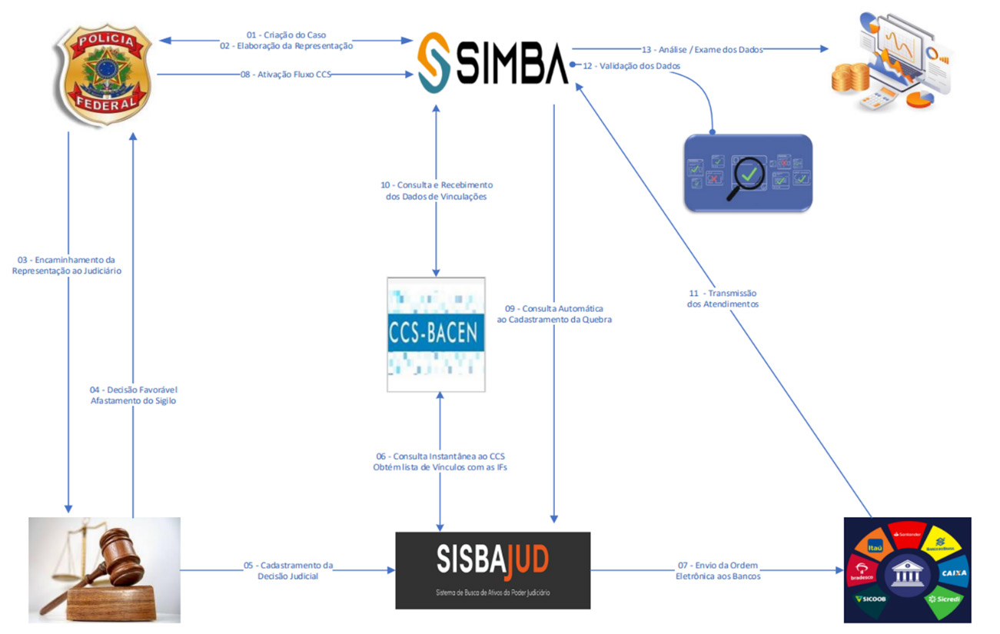
Figura 47 - Fluxo de afastamento de sigilo bancário.
É a primeira etapa do processo, restrita somente aos delegados de Polícia Federal, que deverão acessar o endereço https://Simba.ditec.pf.gov.br/sistemas/ Simba/, sendo que a conta/senha para acesso ao Simba é a mesma utilizada para acessar o e-mail da PF.
Para o primeiro acesso, o Simba vai buscar os dados do usuário nas bases do EGP ou SRH.
Antes de criar um caso, é importante que a lotação do delegado esteja atualizada no Simba, pois ele só conseguirá vincular o caso às unidades da Polícia Federal de sua UF de lotação. Assim, caso o delegado esteja em missão em unidade com UF diferente da sua unidade de lotação e necessite abrir um caso vinculado a essa unidade, o delegado deve, antes, mudar a sua lotação para essa unidade.
Ao criar o caso, este recebe uma numeração, também denominada como Número de Cooperação Técnica, um número de controle atribuído à investigação pelo Simba, no formato 999-SIGLA-999999-99. No caso da PF, os três primeiros dígitos são “002” e a sigla “PF”, seguidos de um sequencial numérico, e por fim dois dígitos verificadores. Exemplo: 002-PF-006403-99.
Para efeitos de validação, é importante saber que nessa etapa de cadas tramento do caso, o delegado elabora uma lista de investigados ao elaborar a representação, sendo todo o processo dividido em três passos:
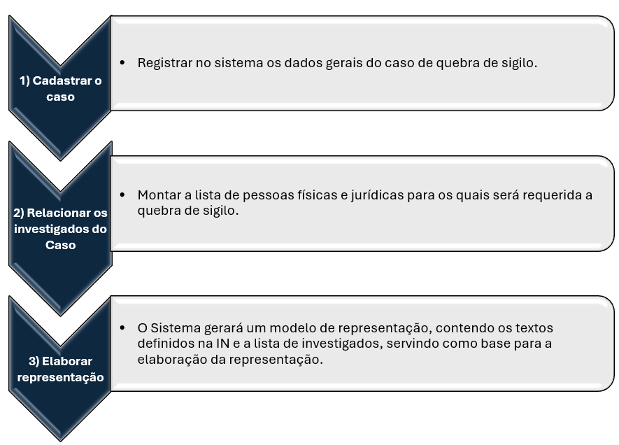
Figura 48 - Passos de elaboração de representação no Simba.
Essa lista pode ser acessada no menu “Representação”, opção Lista de Investigados onde é possível conferir referida lista, com os campos CPF/CNPJ, Pessoa, Nome, Período, Observação:
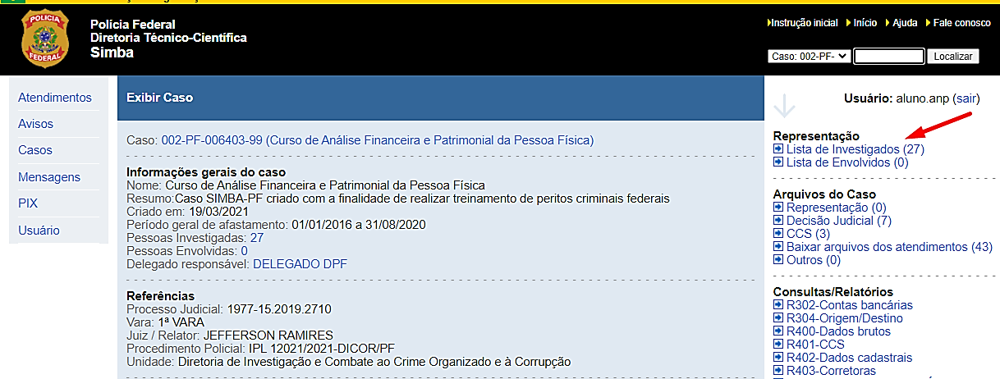
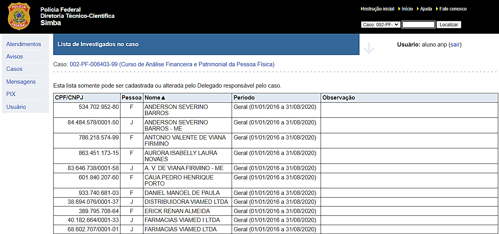
Também é importante salientar que é possível carregar tanto a representação quanto a decisão judicial no Simba, documentos imprescindíveis para a realização da validação dos dados.
Referidos arquivos podem ser encontrados no menu “Arquivos do Caso”:
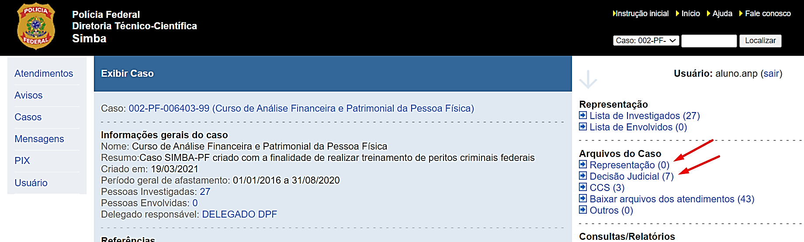
A Decisão Judicial é essencial para que o policial designado para o caso saiba quais foram os investigados cujo sigilo bancário foi efetivamente afastado, qual o prazo determinado pela Justiça para as instituições financeiras enviarem os dados, bem como outras considerações que poderão afetar o procedimento de acompanhamento dos dados transmitidos e o exame.
Qualquer policial com acesso ao caso pode armazenar o arquivo da decisão judicial.
Uma vez aceita a representação e deferida a quebra do sigilo, os dados da decisão judicial respectiva devem ser inseridos em Requisição de Afastamento de Sigilo Bancário no Sisbajud por alguém designado pelo juiz (servidor, assessor etc.), com inclusão de dados tais como o número do caso Simba, investigados do caso, informando CPF/CNPJ, bem como o período do afastamento, ocasião em que o Sisbajud já consulta o CCS e retorna todos os relacionamentos ativos dos envolvidos:
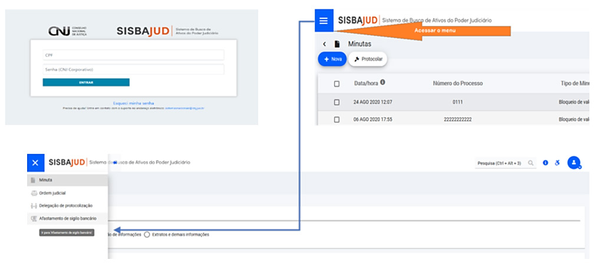
Após esses procedimentos, o cadastrador envia a ordem eletronicamente juntamente com as informações e detalhamento.
Registre-se, para efeitos de interlocução com o judiciário, que é possível para o cadastrador da Vara/Tribunal verificar o andamento das requisições e visualizar o andamento do atendimento, assim como a quantidade de respostas já enviadas.
Após o cadastramento dos dados e envio das requisições às instituições financeiras via Sisbajud, um evento essencial para a validação dos dados é o recebimento dos dados do CCS pelo Simba, sendo que tal recebimento poderá ser realizado de algumas formas, as quais serão detalhadas a seguir:
Fluxo CCS:
Em setembro de 2020, o Conselho Nacional de Justiça (CNJ) celebrou um acordo de cooperação técnica com o Banco Central e desenvolveu uma API (Application Programming Interface) que permitiu a comunicação entre o Sisbajud, Simba e o CCS, remodelando o fluxo de circularização de decisões judiciais de afastamento de sigilo bancário.
Em julho de 2023, foi disponibilizada a função de fluxo CCS automatizado. Com isso, o Simba obtém os dados do CCS diretamente no servidor do Banco Central.
A ativação do fluxo do CCS poderá ser realizada através da função “Ativar fluxo CCS”:
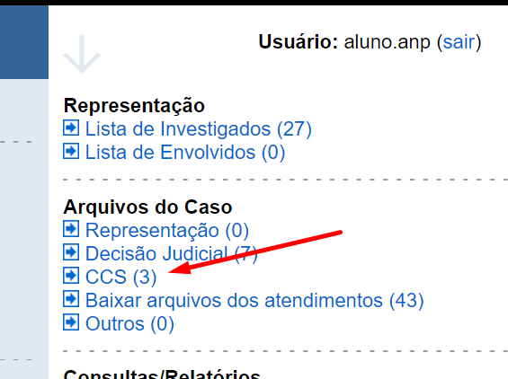
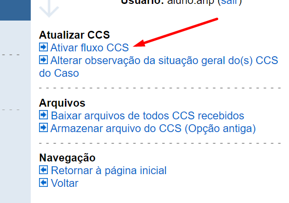
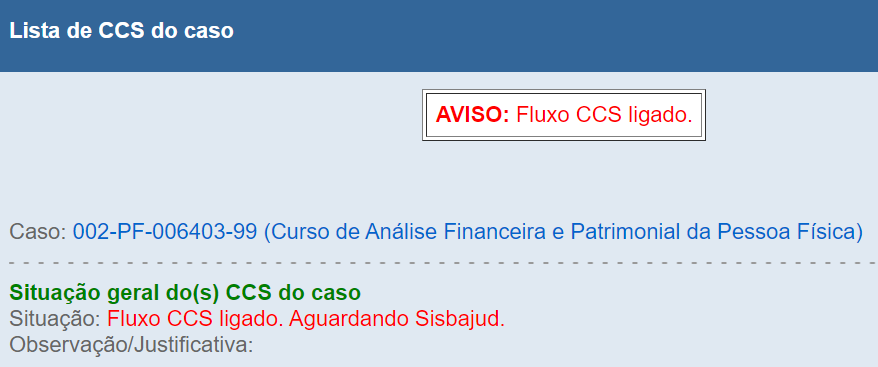
Após ativar o Fluxo CCS, o Simba fará consulta automática ao Sisbajud para detectar se houve quebra de sigilo deferida no caso.
Em caso de resposta positiva, o Simba requisita e recebe do Banco Central as informações do CCS relativas aos investigados, independentemente da data de criação do caso, tendo como requisito essencial que o caso tenha sido transmitido no Sisbajud.
Atualmente, o Simba permite a transmissão de três tipos de “Atendimento” (forma como se nomeia a unidade do pacote de transmissão no Simba), conforme detalhado em tópicos seguintes:
Em cumprimento das determinações judiciais, as instituições financeiras enca minham os registros bancários pelo menos nos cinco arquivos distintos definidos na CARTA-CIRCULAR Nº 3.454.
A unidade/pacote de envio contendo no mínimo esses 05 arquivos (TXT) é chamada de “Atendimento”, sendo que esse pacote com os arquivos é recebido (através do uso do Validador e Transmissor bancário pelas instituições remetentes) e processado pelo Simba.
Na prática, atualmente o Simba/PF recebe 07 arquivos no formato TXT que integram o pacote “Atendimento”, pois além dos 05 arquivos obrigatórios, também são encaminhados dois arquivos com dados do atendimento em si (Hash, dados do processo, nome do responsável etc.), bem como uma lista dos investigados objeto do atendimento:
No Simba, os atendimentos são identificados pela combinação dos campos Número (Tipo) Banco [Data Transmissão].
Exemplo: 73468 (B) 001-BANCO DO BRASIL [04/04/2022] Informações do Atendimento: Número: 73468 Tipo: B (Bancário) Banco: 1-BANCO DO BRASIL Data Transmissão: 04/04/2022
Para consultar dados e detalhamentos desses atendimentos, podemos utilizar os links do menu Dados Recebidos/Atendimentos (Tipos), ou Contas/Atendimentos:
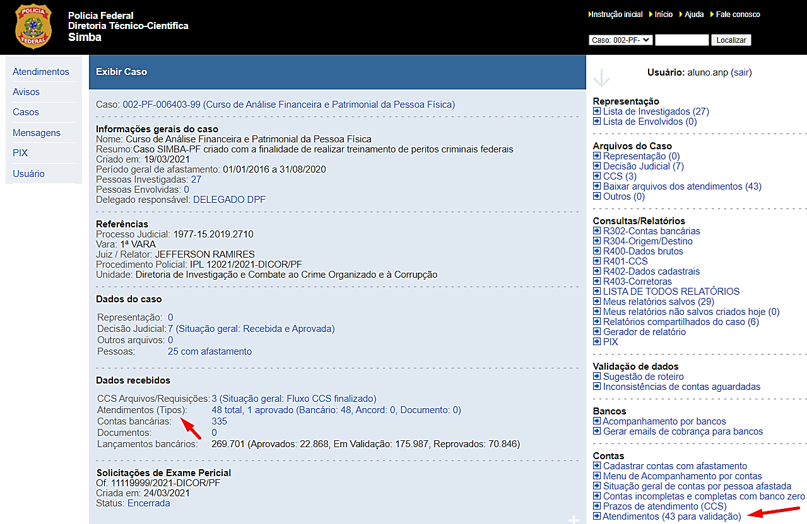
Alguns dados básicos adicionais também são exibidos, tais como hashes dos arquivos, dados do remetente etc.:
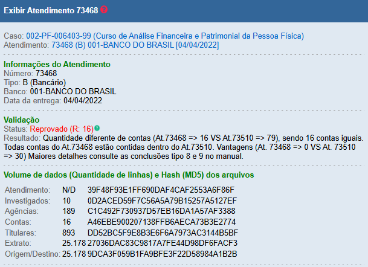
Caso necessário, também é possível obter um detalhamento maior dos dados copiados do Atendimento no receptor/PGR:
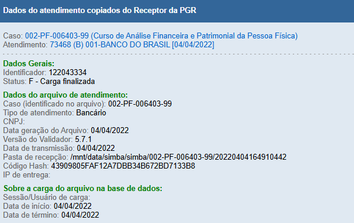
Caso necessário, é possível baixar esse arquivo de atendimento e consultar os arquivos componentes do Atendimento:
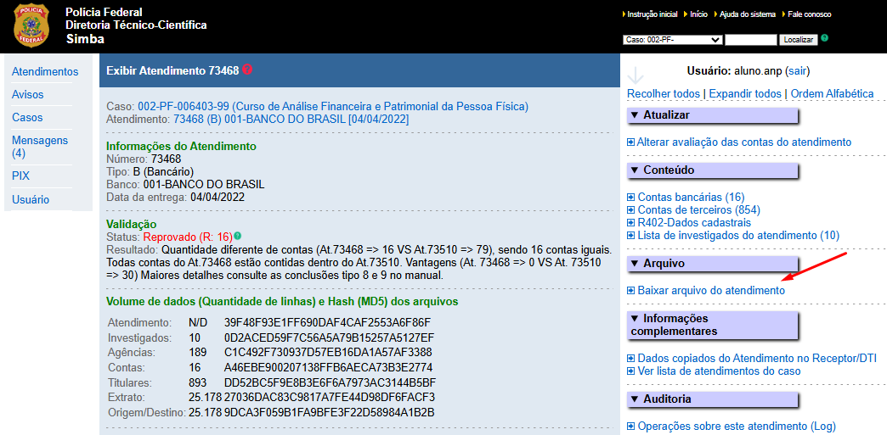
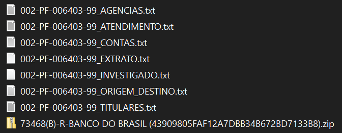
Também é possível visualizar as contas bancárias que integram o atendimento através do menu Conteúdo/Consultar contas bancárias, com opção de detalha mento de cada conta, o que pode ser útil na etapa de validação:
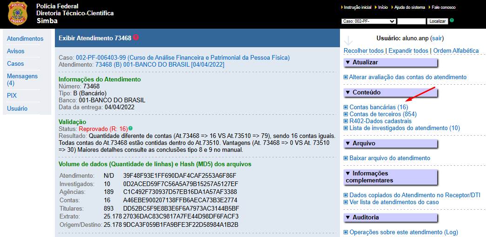
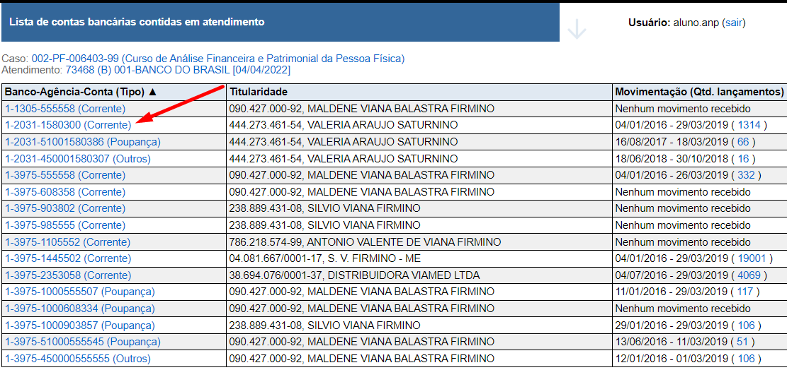
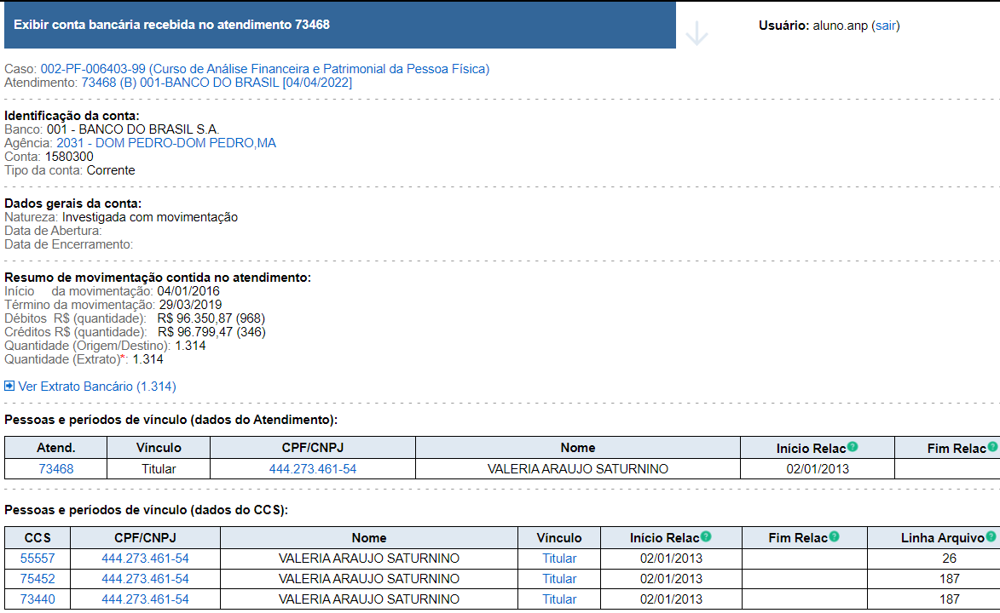
Com o fim de se obter visões mais analíticas e detalhadas dos dados transmi tidos no Atendimento tipo B, e, consequentemente, também servir de instrumentos de apoio para a validação, o Simba dispõe de uma série de relatórios que podem ser encontrados no menu Consultas/Relatórios:
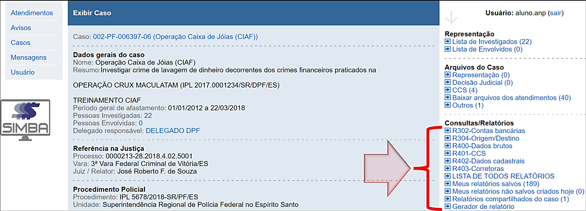
Os dois principais relatórios são: R302 - Contas bancárias recebidas Apresenta dados sobre as contas bancárias recebidas e pode apresentar dados em tela para conferência e consulta:
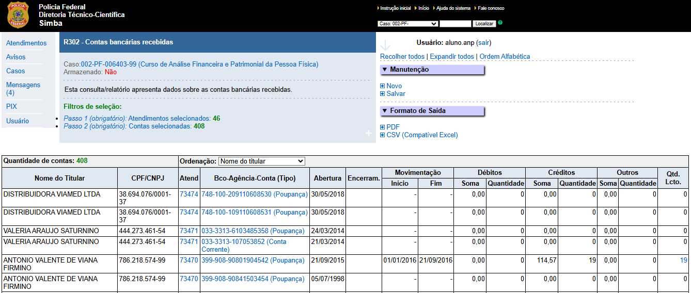
Também há a opção de exportar nos formatos PDF e CSV, sendo que no formato PDF a apresentação se dá em um formato bem-acabado, para publicação em Informações, Relatórios etc., além de apresentar o percentual de identificação das transações que ocorreram nas contas:
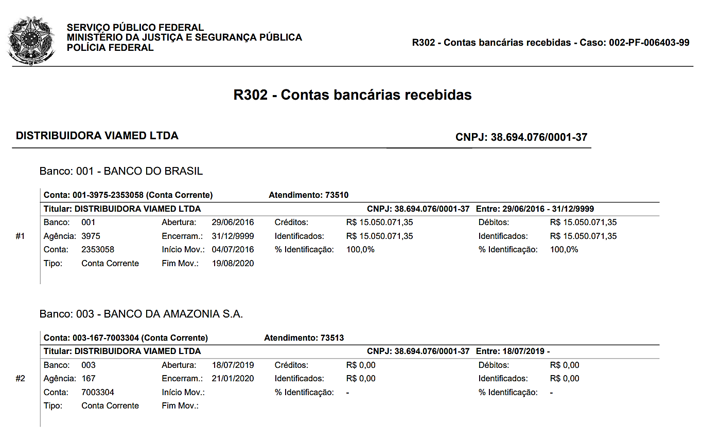
Na opção de exportação no formato CSV, são disponibilizados os seguintes campos no arquivo de saída, os quais podem ser úteis no decurso da validação:
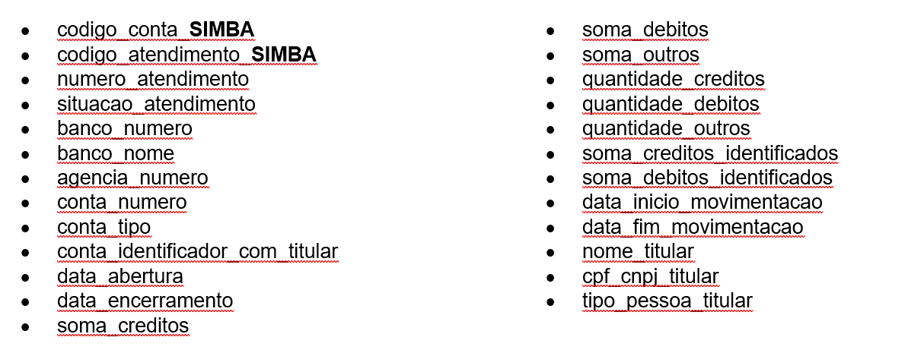
R304 - Lançamentos com Origem/Destino:
Apresenta dados detalhados sobre as movimentações bancárias, incluindo a origem/destino das transações.
É possível a geração do relatório utilizando filtros específicos, dependendo da necessidade e de forma relativamente intuitiva, sendo que o manual para geração e exportação de referido relatório está bem detalhado na página do Simba na intranet: https://pfgovbr.sharepoint.com/sites/Simba/SitePages/ relatorio_r304_menu.aspx.
Uma vez gerado, esse relatório poderá ser visualizado em tela, bem como exportado, com os filtros aplicados, ou integralmente (todos os lançamentos do caso):
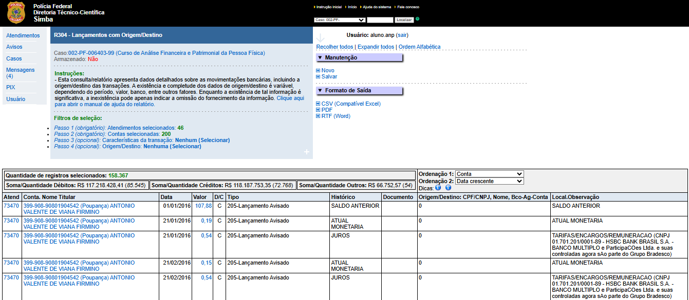
O R304 pode ser exportado nos formatos CSV (Compatível Excel™), PDF e RTF (Word™), sendo que o formato CSV contém o maior número de campos e é o mais completo, com 38 (trinta e oito) campos atualmente:
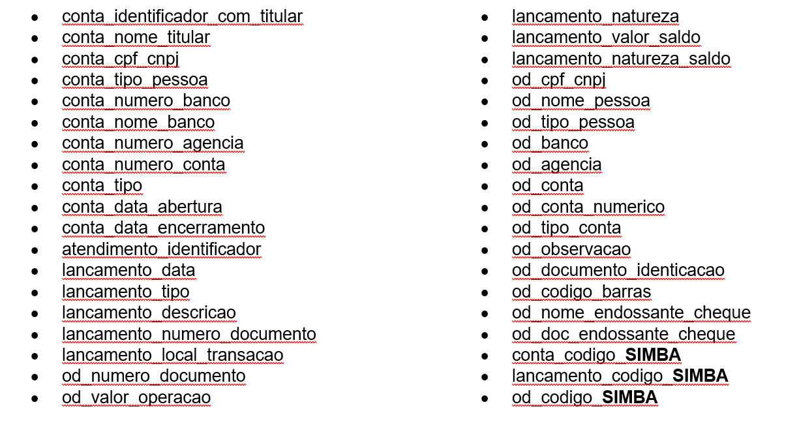
A exportação do R304 em CSV possibilita o uso de ferramentas de análise que também auxiliam nas pesquisas e batimentos realizados durante a validação dos dados, a exemplo do aplicativo Ciaf BANCÁRIO, desenvolvido para análise de relatórios R-304 e arquivos do CCS exportados pelo sistema Simba, que pode ser baixado no Portal Ciaf, endereço https://pfgovbr.sharepoint.com/sites/PortalCiaf.
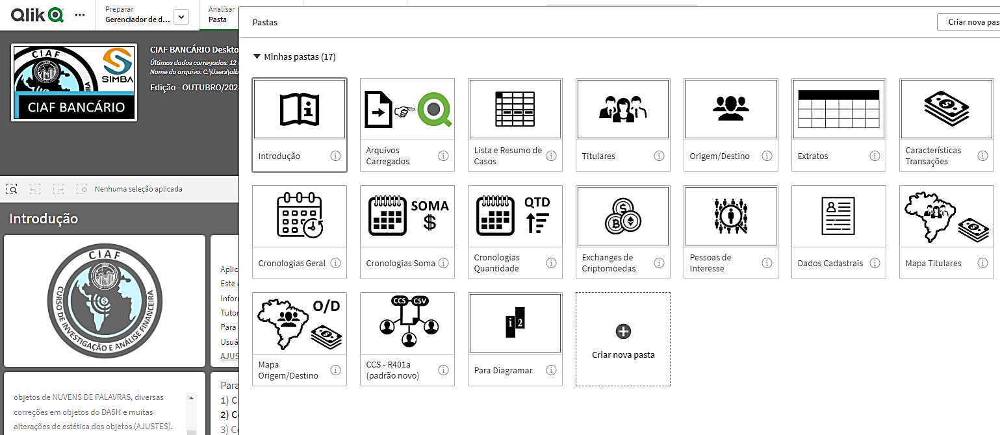
Outros relatórios podem ser gerados a partir dos dados transmitidos no Atendimento tipo B, tais como:
| Relatório | Variação do Relatório | Descrição |
|---|---|---|
| R401- Exportar CCS | R401a - Contas | Apresenta as contas, vínculos e investigados indicados no CCS |
| R401b - CCS | Apresenta os dados gerais do CCS, como datas, processo, arquivos e funcionário respon sável. | |
| R401c - Investigados | Apresenta os dados, informados no CCS, das pessoas com afas tamento decretado | |
| R402- Dados Cadastrais | R402a - Titulares | Apresenta dados cadastrais das pessoas, enviados no arquivo ‘TITULARES’ dos atendimentos. |
| R402b - Agencias | Apresenta dados cadastrais das agências, enviados no arquivo ‘AGENCIAS’ dos atendimentos. | |
| R101 - Contas Recebidas (Sintético) | -------------- | Dados das contas bancárias e pessoas vinculadas, sem infor mações sobre valores movi mentados. |
| R202 - Contas Recebidas (Analítico) | -------------- | Dados das contas bancárias e pessoas vinculadas, incluindo informações sobre valores movi mentados. |
| R103 - Débito/Crédito totalizado por ano | -------------- | Somatório e quantidade de débi tos e créditos agrupado por ano |
| Relatório | Variação do Relatório | Descrição |
|---|---|---|
| R102 - Débito consolidado por tipo de lançamento | -------------- | Somatório e quantidade de débitos agrupado por tipo de lançamento |
| R104 - Crédito consolidado por tipo de lançamento | -------------- | Somatório e quantidade de créditos agrupado por tipo de lançamento |
| R203 - Consolidado por tipo/histórico | -------------- | Somatório e quantidades de cada conta consolidado por tipo de lançamento e histórico |
| R105 - Principais Remetentes | -------------- | Somatório e quantidade de cré ditos agrupado por remetentes (CPF/CNPJ, Nome ou Conta) |
| R106 Principais Destinatários | -------------- | Somatório e quantidade de débi tos agrupado por destinatários (CPF/CNPJ, Nome ou Conta) |
| R205 - Consolidado por remetente/destinatário | -------------- | Somatório e quantidade de débi tos agrupado por remetentes/ destinatários (CPF/CNPJ, Nome ou Conta) |
| R204 - Lançamentos com origem/destino | -------------- | Somatório, percentual e quanti dade de débitos e créditos agru pados por tipo de lançamento e histórico. |
| R206 - Extrato de movimentação | -------------- | Extrato da conta sem informa ções de OD. |
| R261 - Créditos totalizados por ano | -------------- | Lista dos créditos, sem dados de Origem/Destino, separados por ano. |
| R262 - Débitos totalizados por ano | -------------- | Lista dos débitos, sem dados de Origem/Destino, separados por ano |
Implementado em 2022, esse atendimento possibilita o envio de arquivos diversos dos previstos na Carta Circular 3454/2010 pelas instituições financeiras, concentrando no Simba o recebimento de arquivos diversos, complementares etc. que anteriormente eram encaminhados via e-mail e geravam transtornos como estouro do limite da caixa de e-mail, risco de perda e arquivos etc.
Agora os arquivos podem ser transmitidos diretamente para o Simba, em pacotes de até 100 arquivos por atendimento, que devem totalizar no máximo 100 MB. A instituição financeira pode realizar ilimitadas transmissões de documentos, ou seja, a quantidade de transmissões que entender necessário para transmitir todos os documentos requeridos.
Para consultar dados e detalhamentos desses atendimentos, podemos utilizar os links do menu Dados Recebidos/Atendimentos (Tipos), ou Contas/Atendimentos:
Ao acessar a lista de atendimentos, pode-se classificar os tipos de atendimento na coluna “Tipo” e identificar se há algum Atendimento tipo D:
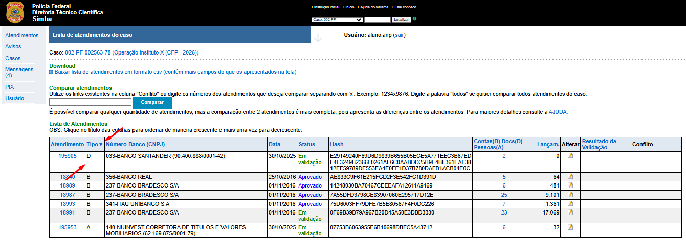
Ao clicar no número do atendimento, é possível ver a lista de documentos, den tre outras opções, bem como baixar os documentos integrantes do atendimento:
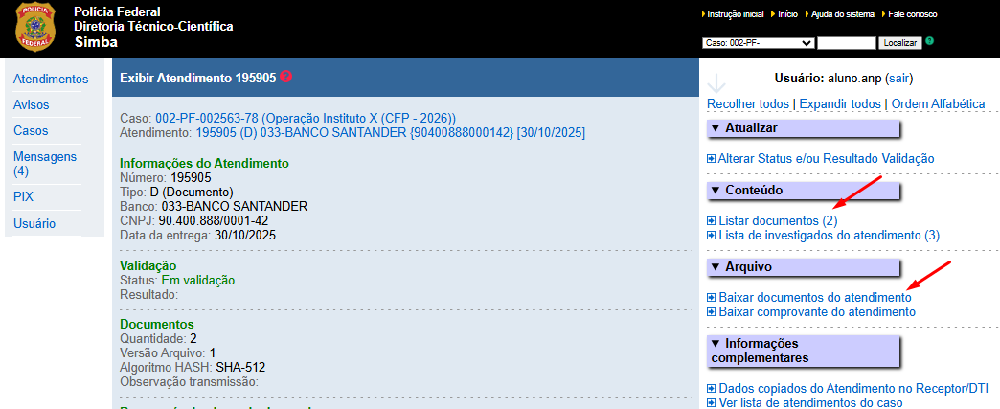
Uma vez que a documentação encaminhada esteja conforme, pode-se alterar o status do Atendimento no Menu Atualizar Modificar Status e/ou Resultado Validação assim como qualquer atendimento, sendo este um dos procedimentos da validação:
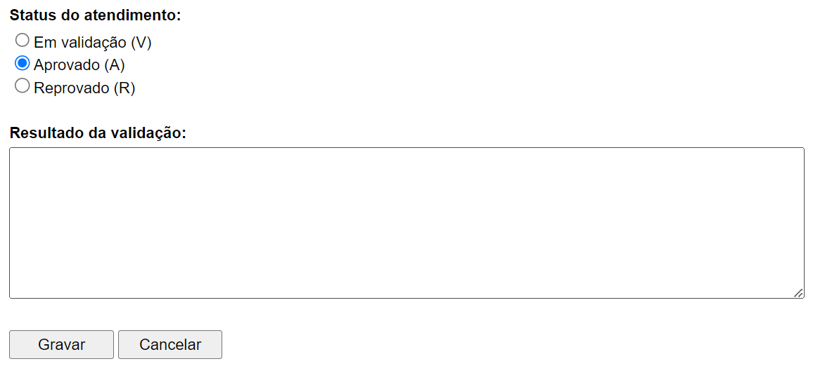
Em resumo, as principais opções para o Atendimento tipo D são as seguintes:
| Modificar status: | Permite alterar o status do atendimento para A (Aprovado), R (Reprovado) e V (Em Validação). |
|---|---|
| Listar Documentos: | Entra na tela com a lista e características dos documentos enviados nesse atendi mento. |
| Ver lista de investigados do atendi mento: | Permite ver a lista, preenchida pela institui ção financeira, informando os investigados relacionados àquele atendimento. |
| Baixar documentos do atendimento: | Será feito download de um arquivo, em formato zip, contendo todos os documen tos do atendimento. |
| Baixar comprovante do atendimento: | Será feito download de um arquivo, em formato pdf, contendo as características dos documentos enviados. |
|---|---|
| Dados copiados do Atendimento no receptor/PGR: | Informa mais detalhes técnicos sobre o atendimento |
Os formatos permitidos de arquivos são: pdf, txt, bmp, jpg, jpeg, png, xls, xlsx, ods, doc, docx,odt, xml, csv e zip.
Com relação às corretoras de valores e distribuidoras de valores, os registros financeiros transmitidos ao Simba são encaminhados em três arquivos distintos, contendo os seguintes campos:
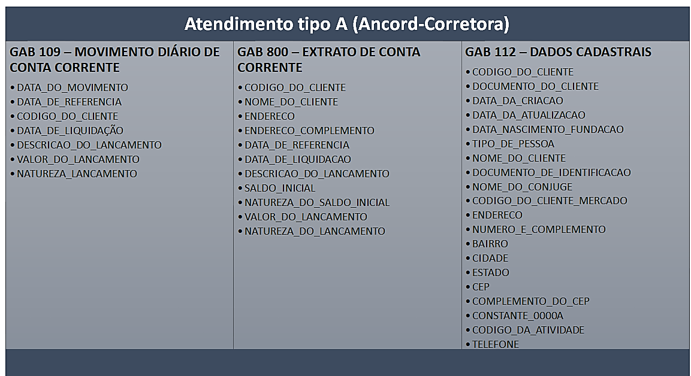
Seguindo a mesma dinâmica dos atendimentos em geral, temos os principais links de navegação:
(Aprovado), R (Reprovado) e V (Em Validação).
Os dados de referido atendimento podem ser consolidados e exportados através da geração de três variações do relatório R403 (Corretoras) listado: